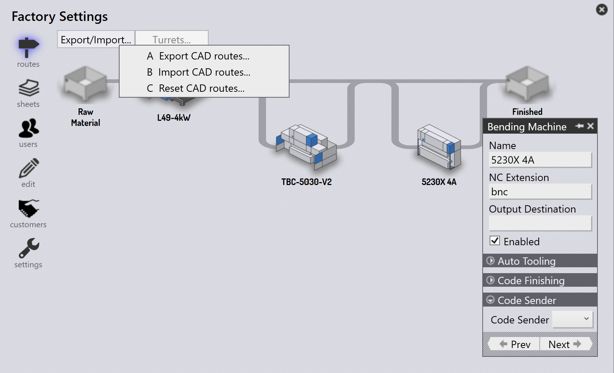

路線
根據您的授權，TruSmartCAM 將具有一組預設的 CAM 機床和 路線設定。您可以自訂這些設定以符合您的 特定製造工作流程。

在路線頁面上，機床以加工工作站的形式表示，每個工作站 都以圖片和名稱標識。
路線連接各工作站，顯示零件從開始到完成可能遵循的工作流程 路徑。您可以將滑鼠懸停在工作站上來檢視其屬性。
點選工作站會開啟一個面板，其中包含該工作站的詳細資訊， 包括其名稱、類型和可用性狀態。
-
若要編輯工作站可用性，請點選工作站並 切換面板中的 Enabled 核取方塊。
匯出/匯入路線設定
匯出/匯入 功能讓使用者可以儲存其目前的路線 設定，並將其套用到其他專案或實例。
匯出 CAD 路線
點選 Export CAD routes… 以將所有目前的路線條件規則儲存到 CSV 檔案。

CSV 列出材料及其路線條件。 欄位代表機床名稱和條件（例如 Material、SpecialTool、HasBend、MaxBendLength）。 值為 1 表示路由至機床；空白儲存格表示無路由。
您可以修改此 CSV 並將其重新匯入系統。
匯入 CAD 路線
使用 Import CAD routes… 來套用修改過的 CSV 檔案。
| 匯入前，請執行 Reset CAD routes 以清除現有設定。 |
系統會讀取檔案並更新路線條件。規則可包含 HasBend 和 MaxBendLength 等條件。

若 HasBend = 1，規則套用於具有折彎的零件。
若 MaxBendLength =1，規則進一步根據零件最長的折彎長度進行限制。
範例 1
Part 00.13 的最長折彎為 500 mm。它符合第一個規則，因此 TBC-5030-V2 被排除。

重設 CAD 路線
使用 Reset CAD routes 在匯入新 CSV 之前清除所有現有設定。
| 若您未重設即匯入，舊規則可能與新規則衝突。 |